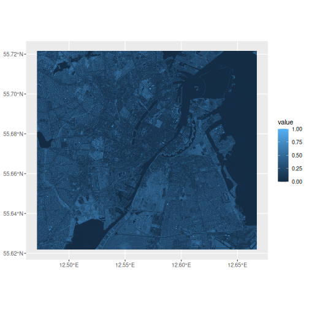
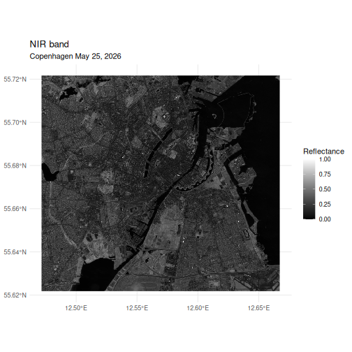
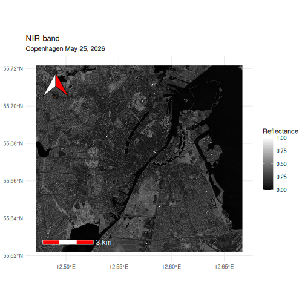
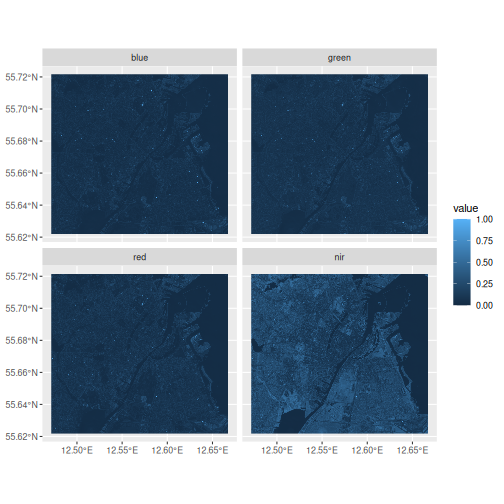
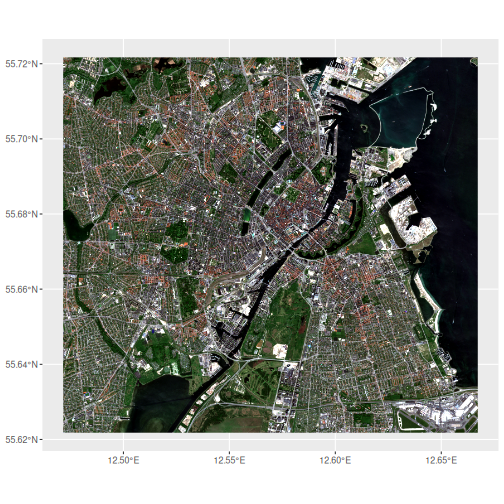
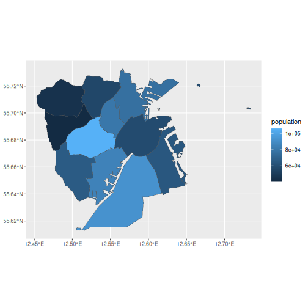
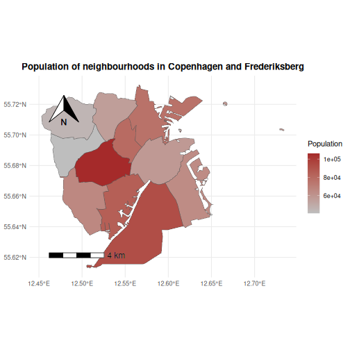
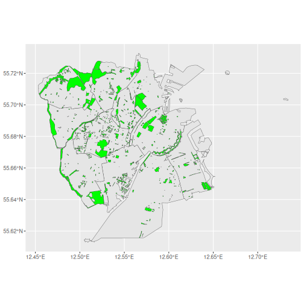
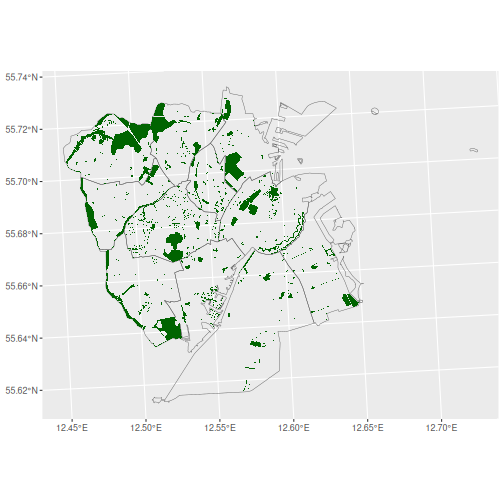

Spatial visualization
Last updated on 2026-08-18 | Edit this page
Estimated time: 84 minutes
Overview
Questions
- FIXME
Objectives
- FIXME
Visualizing spatial data using the terra package can be
done using the plot() methods for quick and simple
results.
If we want to make more advanced visualizations, or if we want to
make them more polished and beuautiful, we can use the
gglot2 package, with the help of the tidyterra
package, augmented by the ggspatial package.
R
library(terra)
library(ggplot2)
library(tidyterra)
library(ggspatial)
Visualization
In ggplot2 the main functions for making specific graphs
are named geom_*. Working with spatial raster and vector
data, we use geom_spatraster() and
geom_spatvector().
The rest of the ggplot2 template, scales, labels etc,
are the same.
Raster Data
We begin by reading ind some data
R
library(terra)
files <- list.files("data/", pattern = ".tiff", full.names = TRUE)
sentinel <- rast(files)
Make sure you have a data folder in your project folder,
and then run this code:
R
urls <- c("https://raw.githubusercontent.com/KUBDatalab/R-toolbox/main/episodes/data/2026-05-25-00_00_2026-05-25-23_59_Sentinel-2_L2A_B02_(Raw).tiff",
"https://raw.githubusercontent.com/KUBDatalab/R-toolbox/main/episodes/data/2026-05-25-00_00_2026-05-25-23_59_Sentinel-2_L2A_B03_(Raw).tiff",
"https://raw.githubusercontent.com/KUBDatalab/R-toolbox/main/episodes/data/2026-05-25-00_00_2026-05-25-23_59_Sentinel-2_L2A_B04_(Raw).tiff",
"https://raw.githubusercontent.com/KUBDatalab/R-toolbox/main/episodes/data/2026-05-25-00_00_2026-05-25-23_59_Sentinel-2_L2A_B08_(Raw).tiff",
"https://raw.githubusercontent.com/KUBDatalab/R-toolbox/main/episodes/data/cph_neighborhoods_and_frederiksberg.gpkg",
"https://raw.githubusercontent.com/KUBDatalab/R-toolbox/main/episodes/data/parks_cph_frederiksberg.gpkg")
download.file(
urls,
destfile = file.path("data", basename(urls)),
mode = "wb"
)
We need to prepare the data a bit; easier to type names, and a rescaling to reflectance values, rather than the 16 bit encoding:
R
names(sentinel) <- c("blue", "green", "red", "nir")
sentinel <- sentinel/65535
Normally we would pipe in the data to the ggplot()
function, but geom_spatraster() requires the data to be
specified directly in the function:
R
ggplot() +
geom_spatraster(data = sentinel,
mapping = aes(fill = nir))
OUTPUT
<SpatRaster> resampled to 500712 cells.
Note the message. There are about 4.3 million cells in the nir-layer
of this dataset. In order to speed up the plot,
geom_spatraster() resamples the data to about 500,000
cells.
Having the data in the ggplot environment, we immediately gain access to the tools in ggplot2, and it is easy(ish) to adjust colours, titles and the general theming:
R
ggplot() +
geom_spatraster(data = sentinel,
mapping = aes(fill = nir)) +
scale_fill_gradient(low = "black", high = "white") +
labs(title = "NIR band",
subtitle = "Copenhagen May 25, 2026",
fill = "Reflectance") +
theme_minimal()

Best practice in spatial data visualization is to include both an arrow indicating north, and a scale using km as its unit.
R
ggplot() +
geom_spatraster(data = sentinel,
mapping = aes(fill = nir)) +
scale_fill_gradient(low = "black", high = "white") +
annotation_north_arrow(location = "tl",
pad_x = unit(1, "cm"),
pad_y = unit(1, "cm"),
style = north_arrow_orienteering(fill = c("white", "red"))) +
annotation_scale(
location = "bl", pad_x = unit(1, "cm"), pad_y = unit(1, "cm"),
line_col = "white", text_col = "white", text_cex = 1, bar_cols = c("red", "white")) +
labs(title = "NIR band",
subtitle = "Copenhagen May 25, 2026",
fill = "Reflectance") +
theme_minimal()

The north arrow is placed in the topleft corner
using the annotation_north_arrow() function, and padded
with 1 cm of extra space in both directions to move it into the map. By
default it is black and white, which can be difficult to see on the
mostly darkgrey background, and we have changed the colours to red and
white.
The scale, added with annotation_scale() take similar
arguments.
Facetting
The only part of the standard ggplot2 template not demonstrated yet, is the facet_*`functions.
If we have more than one layer in our SpatRaster object, we can
facet, using lyr as the faceting variable:
R
ggplot() +
geom_spatraster(data = sentinel) +
facet_wrap(~lyr)
OUTPUT
<SpatRaster> resampled to 500712 cells.
RGB composition
Just like we could make an RGB-composite image using
plotRGB, we can also make them using
ggplot:
R
ggplot() +
geom_spatraster_rgb(data = sentinel, r = 3, g = 2, b = 1, stretch = "lin")
OUTPUT
! `data` has 4 layers. Selecting layers 3, 2, and 1.OUTPUT
<SpatRaster> resampled to 500712 cells.
And now adding titles, captions etc works just like it normally does
using ggplot
Challenge
Try to plot the common false colour composite, where we place the NIR-band in the red channel, the red band in the green channel and the bu
You can remind yourself of the order of bands in our
sentinel data running names(sentinel)
R
ggplot() +
geom_spatraster_rgb(data = sentinel, r = 4, g = 3 , b = 2, stretch = "lin")
Vector data
Load data
We are going to work with the neighbourhood and parks data for Copenhagen and Frederiksberg again:
R
neighbourhoods <- vect("data/cph_neighborhoods_and_frederiksberg.gpkg")
parks <- vect("data/parks_cph_frederiksberg.gpkg")
Choropleth map
If we inspect the neighbourhoods data, we can observe
that there is a population column in the
values part of it:
R
neighbourhoods
OUTPUT
class : SpatVector
geometry : polygons
dimensions : 11, 2 (geometries, attributes)
extent : 12.45305, 12.73425, 55.61284, 55.73271 (xmin, xmax, ymin, ymax)
source : cph_neighborhoods_and_frederiksberg.gpkg (områder)
coord. ref. : lon/lat WGS 84 (EPSG:4326)
names : name population
type : <chr> <num>
values : Indre By 58224
Nørrebro 79779
Vanløse 40847
...We can plot the neighbourhoods, and then colour the polygons, based
on the value in population;
R
ggplot() +
geom_spatvector(data = neighbourhoods, aes(fill = population))

Note that we map the colour/fill argument to population just like we
normally do when we use ggplot.
And we can adjust the plot in the exact same way we would do with any
other ggplot, and add a north-arrow and scale
R
ggplot() +
geom_spatvector(data = neighbourhoods, aes(fill = population)) +
scale_fill_gradient(low = "grey", high = "brown") +
labs(title = "Population of neighbourhoods in Copenhagen and Frederiksberg",
fill = expression("Population") ) +
annotation_north_arrow(location = "tl",
pad_x = unit(1, "cm"),
pad_y = unit(1, "cm"),
style = north_arrow_orienteering(fill = c("white", "red"))) +
annotation_scale(
location = "bl", pad_x = unit(1, "cm"), pad_y = unit(1, "cm"),
line_col = "white", text_col = "white", text_cex = 1, bar_cols = c("red", "white")) +
theme_minimal() +
theme(
plot.title = element_text(face = "bold", hjust = 0.5)
) +
annotation_north_arrow(location = "tl",
pad_x = unit(1, "cm"),
pad_y = unit(1, "cm")) +
annotation_scale(
location = "bl", pad_x = unit(1, "cm"), pad_y = unit(1, "cm"), text_cex = 1)

These kinds of maps are useful for visualizing quantities that vary
amongst geographical areas. The name choropleth originates
with greek, khōros (χῶρος), meaning “area or region,” and plêthos
(πλῆθος), meaning “multitude or quantity”.
Here we have visualized the population. If we had the data, we could also visualize other quantities: Propotion of elderly people or frequency of certain diseases, to take just two examples.
Challenge
With the data we have available, and the techniques we have learned about earlier, try to plot the population density of the neighbourhoods.
Population density is defined as the number of people pr square
kilometer (or any other measurement of area). We can find the area of
each neighbourhood using the expanse() function. Start by
calculating the area, and then divide the population with the area. We
can use the mutate() just like normally.
R
pop_density <- neighbourhoods |>
mutate(area = expanse(neighbourhoods, unit = "km")) |>
mutate(pop_density = population/area)
ggplot() +
geom_spatvector(data = pop_density, aes(fill = pop_density))
Combining layers
If we have more than one layer we would like to plot, a
ggplot method for that exists as well:
R
ggplot() +
geom_spatvector(data = neighbourhoods) +
geom_spatvector(data = parks, fill = "green")

We can even add a layer containing raster data, but we will have to think about the order.
Challenge
Try to plot the nir-band from sentinel, and then the
neighbourhoods data.
Consider playing with the alpha and colour
arguments
One possible way is this.
R
ggplot() +
geom_spatraster(data= sentinel, mapping = aes(fill = nir)) +
geom_spatvector(data = neighbourhoods, alpha = 0, colour= "white")
If alpha is not set to 0, the second layer will make the
first almost invisible. And the default colour for plotting
the borders between the neighbourhoods is black and also almost
invisible.
Reprojecting
Handling the mapping of data described as points on a globe to data described as points on a two-dimensional map, is not trivial, but we have access to functions that do it for us.
That is called reprojecting. We have data projected in
one system, but would like to have it in another. It is generally
important to have all data in the same system, but another advantage is
that we can project data described as coordinates in degrees, minutes
and seconds into coordinates in km (relative to geodaetic points in the
landscape definded by Danish Geodata Agency).
R
ggplot() +
geom_spatvector(data = neighbourhoods, fill = NA) +
geom_spatvector(data = parks, fill = "darkgreen", colour = NA) +
coord_sf(
crs = "EPSG:25832",
datum = "EPSG:4258"
)

Note that the choise of Coordinate Reference System depends on the location. For example it can be relevant to use EPSG::25833 if the data is covering Bornholm.
- FIXME